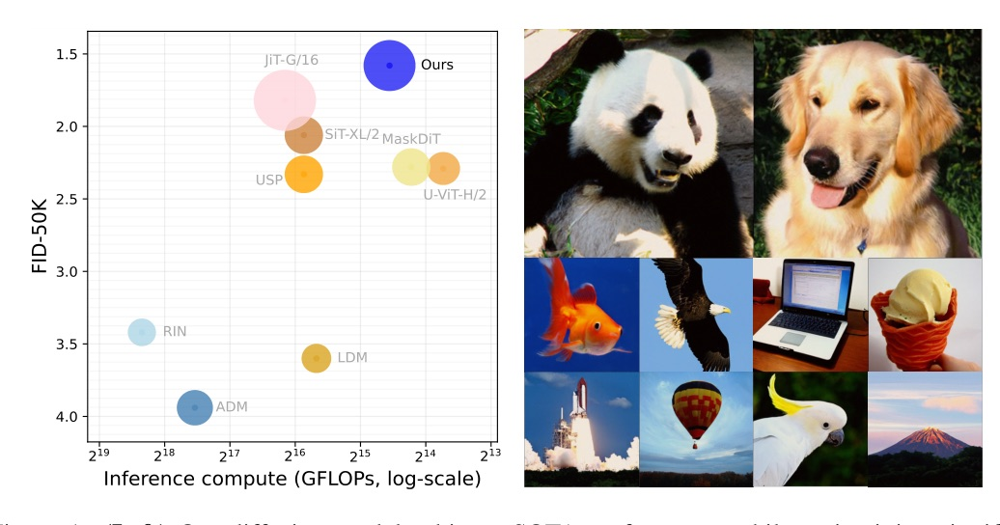
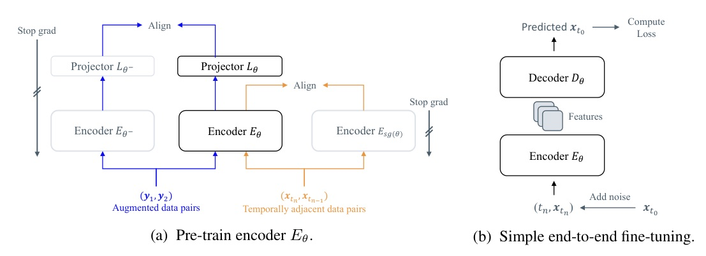
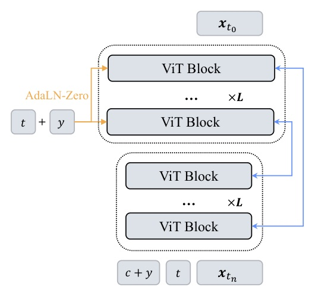
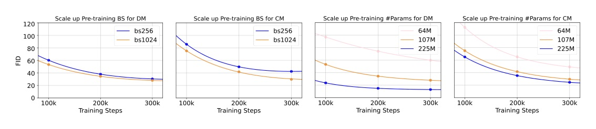
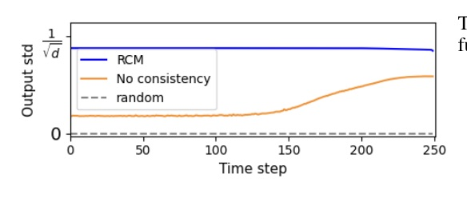
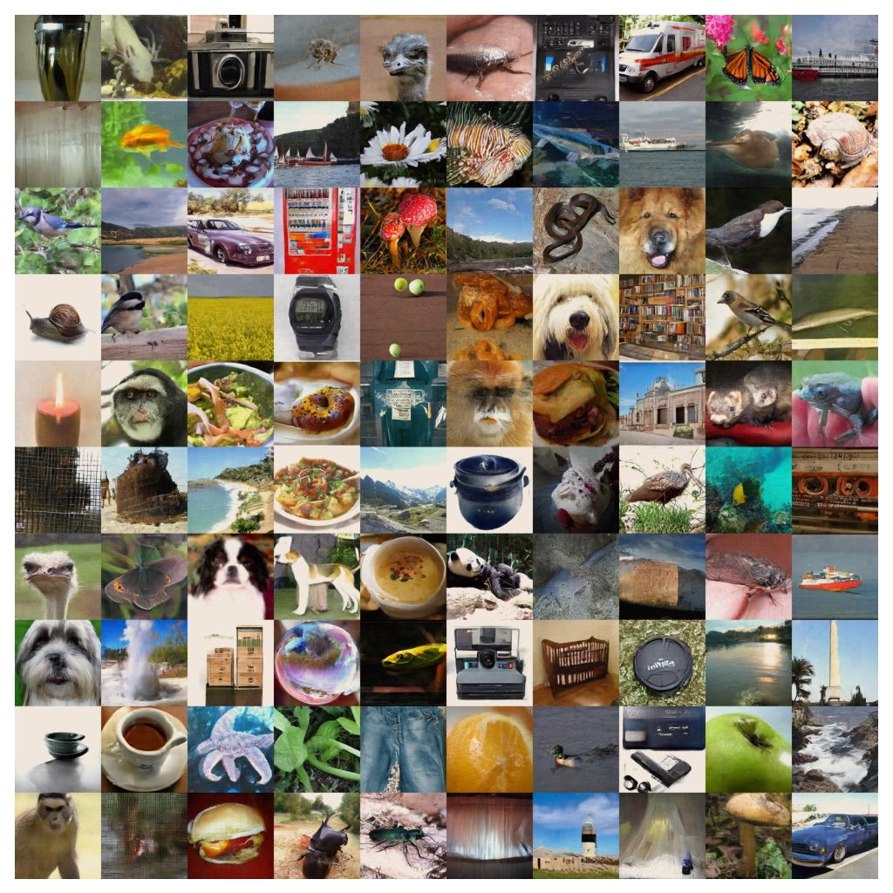

End-to-End Pixel-Space Generative Modeling via Self-Supervised Pre-Training

Pixel-space diffusion was not doomed by pixels; it was missing noise-consistent semantic pretraining.
EPG first trains an encoder to preserve semantics along the same diffusion trajectory, then fine-tunes encoder+decoder end-to-end for generation.


| Model | Space | FID | NFE | GFLOPs |
|---|---|---|---|---|
| SiT-XL/2 | latent | 2.06 | 250x2 | 312+119 |
| RAE | latent | 1.28 | 50x2 | 107+146 |
| JiT-G/16 | pixel | 1.82 | 191 | 383 |
| EPG-G/16 | pixel | 1.58 | 75 | 321 |
| Model | Space | FID | NFE | GFLOPs |
|---|---|---|---|---|
| DiT-XL/2 | latent | 3.04 | 250x2 | 1260+524.6 |
| SiT-XL/2 | latent | 2.62 | 250x2 | 1260+524.6 |
| PixelNerd | pixel | 2.84 | 100x2 | 583 |
| EPG-L/32 | pixel | 2.35 | 75 | 113 |
| Component / model | FID | Cost hours | Params |
|---|---|---|---|
| sd-vae-mse | - | 160 | 84M |
| Our pre-train | - | 57 | 106M |
| DiT-XL/2 | 2.27 | 506 | 675M |
| EPG-XL/16 | 2.04 | 139 | 583M |
| EPG-XXL/16 | 1.87 | 160 | 789M |
| Model | Space | FID | NFE | Epochs |
|---|---|---|---|---|
| iCT-XL/2 | latent | 34.24 | 1 | - |
| Shortcut-XL/2 | latent | 10.60 | 1 | 250 |
| IMM | latent | 8.05 | 1 | 6395 |
| EPG-L/16 | pixel | 8.82 | 1 | 560 |
| Setting | DM FID | CM FID | Interpretation |
|---|---|---|---|
| EPG-B/16 | 52.67 | 46.99 | full objective |
| w/o consistency | 58.18 | 56.41 | semantics not temporally aligned |
| w/o contrast | 115.48 | 117.63 | semantic collapse |
| Scratch | 77.25 | NaN | unstable CM training |
| CM setting | FID | Meaning |
|---|---|---|
| Scratch | NaN | fails |
| w/o aux | 129.16 | consistency signal alone too weak |
| w/o RCM | 65.05 | aux exists, but no strong pretrained encoder |
| EPG-B/16 | 36.75 | RCM + aux loss |

The key object is not the pixel, but the trajectory-stable semantic identity behind the pixel.
EPG makes two noisy samples positive only when they belong to the same deterministic path back to the same clean image.
| Encoder update | FID |
|---|---|
| Default | 12.46 |
| Layer-wise LR decay 0.5 | 18.56 |
| Frozen | 22.44 |
Default end-to-end encoder updates win over frozen semantic features.


“we argue encoders in diffusion-based generative models primarily learn high-level visual semantics from noisy inputs and the decoders act as low-level pixel generators conditioned on encoder representations.”
作者把生成模型拆成「噪聲輸入上的語意編碼器」與「條件化像素生成解碼器」；EPG 的兩階段訓練就是從這個判斷長出來的。§1 p.2
“The representation consistency loss uses temporally adjacent points along the ODE trajectory as positive pairs … while adjacent points from different trajectories serve as negatives.”
RCL 的正負樣本不是普通 augmentation，而是由同一條或不同條生成軌跡決定。§3.2 p.5
“By further increasing model parameters to 1391M, our EPG-G/16 model achieves 1.58 FID with class-balanced sampling, outperforming JiT-G/16 by a large margin.”
最大 EPG-G/16 在 ImageNet-256 達到 FID 1.58，這是 deck 的 headline 結果。§4.1 p.8
“Our EPGs currently under-perform leading latent-space methods like REPA and RAE. However, the performance gap can be largely explained by a significant disparity in training compute.”
作者沒有宣稱 latent-space 已經被全面取代；他們把剩餘差距定位成 scaling / compute 問題。§6 p.10
Video generation / temporal models